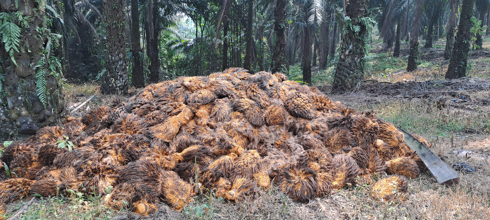

My Projects

Real-time Detection of Fresh Fruit Bunch (FFB) Maturity Level Using UAV & Thermal Camera
Computer vision system utilizing UAV and thermal imaging to detect FFB maturity levels in real-time. Features IoT connectivity for transferring detection results to mobile devices.
Status: Ongoing

OPEFB Detection System
Python application for detecting the presence of oil palm empty fruit bunch piles using a modified Excess Green Index (ExG) method.
🏆 PredWeatherMarkov
Award-Winning Research: 3rd Place Winner at IEOM International Conference (Sponsored by Siemens). Probabilistic weather forecasting system using Markov Chain methodology to analyze daily rainfall patterns in Bogor City. Achieved 60% accuracy with 100% recall for light rain detection. Published in IEOM Society International proceedings with DOI assignment.

Customer Segmentation Using RFM Analysis
Advanced customer segmentation using RFM Analysis and K-means clustering with ARIMA prediction. Final project at Startup Campus analyzing customer behavior patterns.
Alzheimer's Disease Prediction
Machine learning classification model to predict Alzheimer's disease based on patient medical history. Achieved 81.4% accuracy using Ada Boost Classifier.
Ames Housing Price Prediction
Regression model comparison for house price prediction. XGBoost Regressor achieved the highest accuracy with R² score of 0.906394.

theLook E-commerce Dashboard
Interactive Power BI dashboard analyzing synthetic e-commerce data from Google Cloud Platform. Comprehensive sales and customer insights visualization.